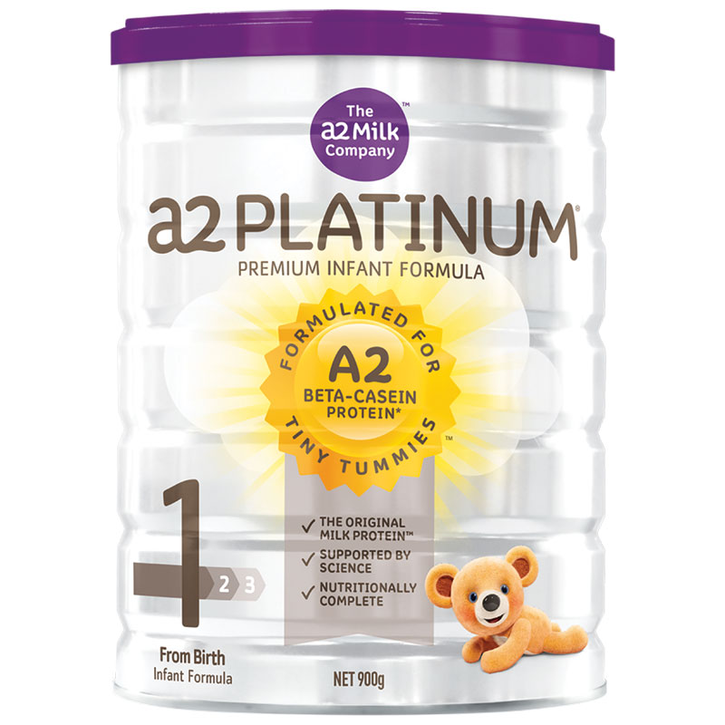
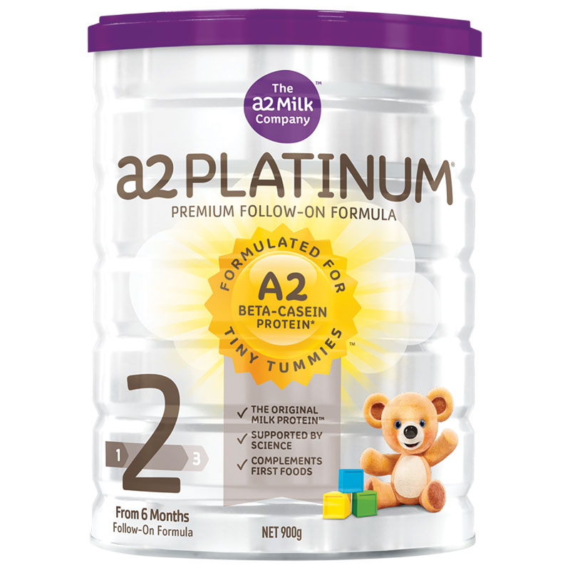

|  | A2白金婴儿奶粉一段，二段含有a2 beta酪蛋白，不含a1 beta酪蛋白。研究人员发现，a2牛奶比普通牛奶对人体健康更加有益，而且引发的不良反应更少； A2白金婴儿奶粉一段，二段100%纯天然，提供人体多种所需的营养物质，有利于培养健康的血液，提高免疫系统，视力，肌肉和神经功能，保持皮肤健康，促进身体各部分机能的健康成长。适合第一阶段0-6个月婴儿，第二阶段适合6-12个月婴儿。 产品特点：
○ 100%纯天然； ○ 口感浓醇； ○ 营养价值高； ○ 配方均衡。 功能概述：
○ 提高免疫系统，视力，肌肉和神经功能； ○ 提供人体多种所需的营养物质； ○ 促进身体各部分机能的健康成长； ○ 有利于培养健康的血液。 主要成份：
○ 脱盐乳清粉 ○ 植物油（含大豆油） ○ 乳糖 ○ 低聚半乳糖 ○ 多聚果糖 ○ 金枪鱼油 ○ 磷脂 ○ 花生四烯酸 ○ 酸度调节剂 ○ 脱脂牛奶 ○ 浓缩乳清蛋白 ○ 生磺酸 适用人群
○ 1段 适用于0-6个月婴儿。 ○ 2段 适用于6-12个月婴儿。 使用方法：
○ 将正确量煮开过的凉水倒入奶瓶，加热到喂养温度； ○ 将每勺奶粉用内置的刮平器刮平； ○ 一平勺奶粉请兑50毫升水，盖好奶瓶盖，摇动奶瓶至奶粉完全溶解； ○ 喂养前，把奶液滴在手腕上试温，冲调好马上喂养（不要贮存），喂完后多余奶液请丢弃。 注意事项：
○ 使用时应仔细阅读标签； ○ 产品宜存放至阴凉干燥处，避免阳光直射及高温。 |